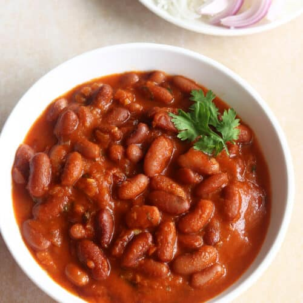

Kidney Bean Curry

Description
Rajma (Kidney Bean Curry)
Rajma is a hearty and comforting North Indian curry made with red kidney beans in a spiced tomato-onion gravy, typically served with steamed rice.
Ingredients
- 1 cup dried kidney beans (soaked overnight) or 1 can of kidney beans
- 2 medium onions, finely chopped
- 2 medium tomatoes, pureed
- 1-inch ginger and 3–4 garlic cloves, minced
- 1 tsp cumin seeds
- 1 tsp turmeric powder
- 1 tsp coriander powder
- 1 tsp garam masala
- 1 tsp red chili powder (optional)
- 2 tbsp oil
- Fresh coriander (for garnish)
- Salt to taste
Steps
- Cook the soaked kidney beans in a pressure cooker or pot until soft.
- Heat oil in a pan; add cumin seeds.
- Add onions, sauté until golden.
- Add ginger-garlic, cook until fragrant.
- Add tomato puree and spices. Cook until oil separates.
- Add cooked beans and some water; simmer for 15–20 minutes.
- Adjust seasoning and garnish with coriander.
- Serve Warm with Roti or Rice!
Home